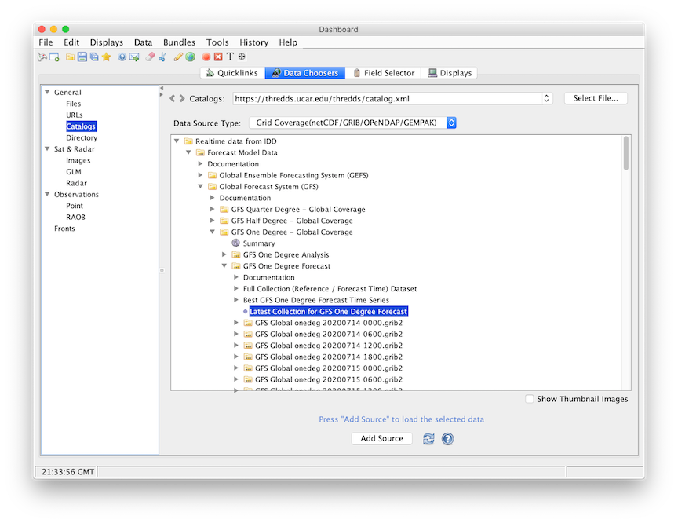
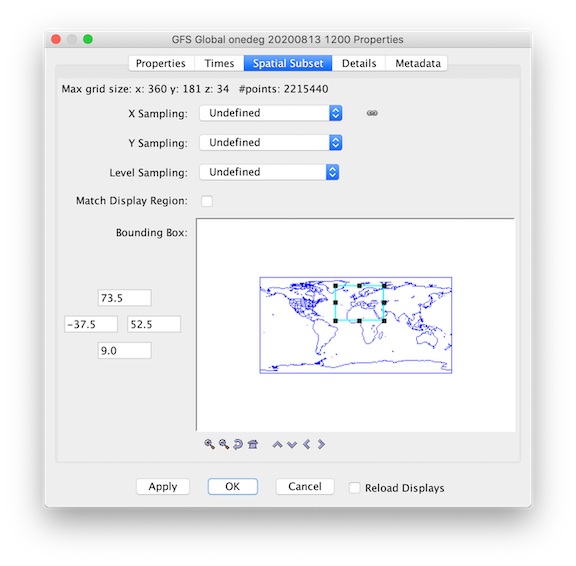
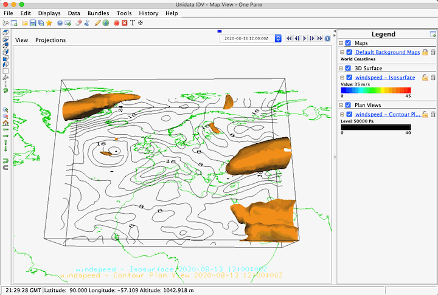

- Open the
Data Chooserswindow. - Click on the
Catalogsnode in the chooser tree. - From the catalog selector drop-down, select the Thredds data server
catalog:
https://thredds.ucar.edu/thredds/catalog.xml
Updatebutton. [ht::cutAndPasteTip]A tree view of the data catalog will be displayed in the window below the selector.
- Expand the
Realtime data from IDDtab, and then theForecast Model Datatab. - Select the latest collection for
GFS One Degree - Global Coverageentry. - Specify the data source type to be Grid Coverage(netCDF/GRIB/OPENDAP/GEMPAK)
using the [ht::menu {Data Source Type}] drop down menu and then press
the
Add Sourcebutton.

- The IDV defualts the type of model data as "Grid files" type. Only the "Grid Coverage" type has the feature of cross seam spatial subset.
- Spatially subset the grid using the [ht::tab Spatial Subset] tab of the Data Source Properties or the Field Selector. The [ht::button Flip map longitude] button at the bottom of the panel flips longitudes in a cyclic rectilinear grid from 0/360 to -180/180 (or vice-versa) before performing the cross seam subsetting.

- In the Fields panel of data parameters that are categorized as 2D and 3D fields,
Click on the 3D grid tab (
 )
to expand that category list. Select a parameter name as "Speed (from u-component_of_wind_isobaric &
u-component_of_wind_isobaric)".
)
to expand that category list. Select a parameter name as "Speed (from u-component_of_wind_isobaric &
u-component_of_wind_isobaric)". - Select "Isosurface" display in the 3D Surface Displays list and click on the Create Display button. Create another Contour Plan View by selecting that display in the Plan Views Displays list and click on the Create Display button. Both displays will be created and shown in the main window.
- For more information on time and spatial subset, see the [ht::dialog Data Source Properties] page of this User's Guide.
